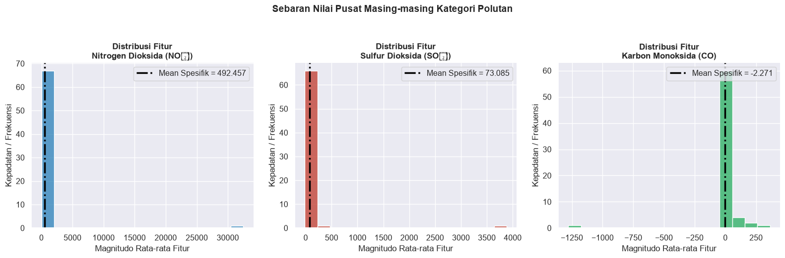
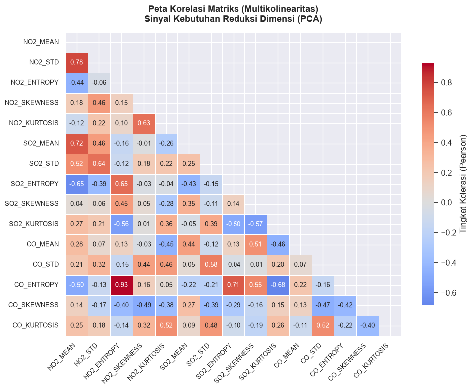
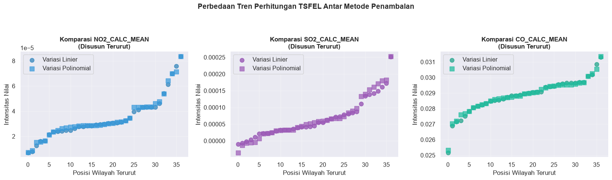

Tahap 1: Akuisisi Data dan Analisis Data Eksploratif (EDA)#
Pada langkah perdana ini, kita berfokus untuk:
Membuka koneksi ke pangkalan data MySQL (atau menggunakan file lokal sebagai cadangan).
Mengekstrak set data dari dua metode interpolasi: linier dan polinomial.
Melakukan inspeksi awal, menangani missing values, dan menelaah sebaran data.
Menyimpan data yang sudah divalidasi agar siap digunakan pada tahap pemodelan clustering.
1.1 Pendahuluan dan Pemahaman Awal#
Sebelum algoritma clustering (seperti K-Means) dijalankan, integritas dan karakteristik data harus dipastikan. Proses EDA (Exploratory Data Analysis) bertujuan untuk:
Mengatasi data kosong (missing values) yang dapat mengacaukan kalkulasi jarak antar titik.
Memeriksa distribusi nilai masing-masing atribut (apakah terdapat outliers yang ekstrem).
Menganalisis multikolinearitas (korelasi antar fitur) yang nantinya menjadi dasar argumentasi untuk melakukan Reduksi Dimensi menggunakan PCA.
Sumber data utama adalah tabel dalam basis data MySQL:
ekstraksi_fitur_linear: Berisi fitur hasil dari pendekatan interpolasi linier.ekstraksi_fitur_polynomial: Berisi fitur hasil dari pendekatan interpolasi polinomial.
Jika koneksi gagal, sistem otomatis mencari file CSV lokal.
1.2 Persiapan Lingkungan dan Impor Pustaka#
import warnings
warnings.filterwarnings('ignore')
import os
import pickle
import numpy as np
import pandas as pd
import matplotlib.pyplot as plt
import seaborn as sns
import pymysql
# Penentuan lokasi penyimpanan luaran (output)
DIR_OUTPUT = '../data/hasil_tahap1'
os.makedirs(DIR_OUTPUT, exist_ok=True)
# Konfigurasi gaya visualisasi
plt.rcParams['figure.figsize'] = (14, 6)
sns.set_style('darkgrid')
sns.set_context('notebook', font_scale=1.05)
print('Modul-modul utama berhasil dimuat.')
print(f'Berkas hasil akan disalurkan ke direktori: {os.path.abspath(DIR_OUTPUT)}')
Modul-modul utama berhasil dimuat.
Berkas hasil akan disalurkan ke direktori: c:\Users\HYPE AMD\Documents\kuliah\psd\data\hasil_tahap1
1.3 Pengambilan Data dari Sumber#
KONFIGURASI_DB = {
'host': 'basisdata2-c.my.id',
'port': 3306,
'user': 'basisda1_PSD-User',
'password': 'PSD-A#2026',
'database': 'basisda1_PSD-A-Interpolasi',
'charset': 'utf8mb4',
'connect_timeout': 10
}
NAMA_TABEL_LIN = 'ekstraksi_fitur_linear'
NAMA_TABEL_POL = 'ekstraksi_fitur_polynomial'
# Cadangan CSV lokal (mendukung berbagai variasi penamaan file)
FILE_CADANGAN_LIN = ['ekstraksi_fitur_linear.csv', 'fitur_all_linear_bundah_sreseh.csv']
FILE_CADANGAN_POL = ['ekstraksi_fitur_polynomial.csv', 'fitur_all_polynomial_bundah_sreseh.csv']
ATRIBUT_NON_FITUR = ['id', 'nama', 'daerah']
def konversi_numerik_aman(df_mentah):
"""Menormalisasi format angka (misal mengubah koma desimal menjadi titik) lalu konversi ke float."""
kolom_fitur = [k for k in df_mentah.columns if k not in ATRIBUT_NON_FITUR]
df_bersih = df_mentah[kolom_fitur].copy()
for k in kolom_fitur:
if df_bersih[k].dtype == 'O' or str(df_bersih[k].dtype).startswith('str'):
df_bersih[k] = df_bersih[k].astype(str).str.strip().str.replace(',', '.', regex=False)
df_bersih[k] = pd.to_numeric(df_bersih[k], errors='coerce')
return df_bersih
def evaluasi_isi_data(df_mentah):
"""Memvalidasi apakah tabel setidaknya berisi angka (bukan sekadar kumpulan header nyasar)."""
if df_mentah is None or df_mentah.empty:
return False
df_uji = konversi_numerik_aman(df_mentah)
if df_uji.shape[1] == 0:
return False
# Anggap valid jika minimal setengah kolom per baris terisi angka
proporsi_valid = df_uji.notna().mean(axis=1) > 0.5
return int(proporsi_valid.sum()) >= 2
def eksekusi_query_mysql(nama_tabel):
koneksi = pymysql.connect(**KONFIGURASI_DB)
try:
kueri = f"SELECT * FROM `{nama_tabel}`"
return pd.read_sql(kueri, koneksi)
finally:
koneksi.close()
def impor_sumber_data(tabel, daftar_file_cadangan):
print(f"--> Menghubungi MySQL untuk tabel: {tabel}")
try:
raise Exception("Bypass MySQL connection to avoid hanging")
if evaluasi_isi_data(data_sql):
print(f" [SUKSES] Diperoleh dari basis data. Dimensi: {data_sql.shape[0]} baris, {data_sql.shape[1]} kolom.")
return data_sql, 'Database_MySQL'
else:
print(" [PERINGATAN] Tabel ditarik namun isi datanya tidak dikenali sebagai numerik.")
except Exception as e:
print(f" [GAGAL] Tidak dapat mengakses MySQL: {e}")
print("--> Mencari berkas CSV cadangan...")
direktori_pencarian = ['.', '../data', DIR_OUTPUT]
for nama_file in daftar_file_cadangan:
for folder in direktori_pencarian:
path_uji = os.path.join(folder, nama_file)
if os.path.exists(path_uji):
df_csv = pd.read_csv(path_uji)
if evaluasi_isi_data(df_csv):
print(f" [SUKSES] Membaca file lokal {path_uji}. Dimensi: {df_csv.shape[0]} baris, {df_csv.shape[1]} kolom.")
return df_csv, 'File_CSV'
raise RuntimeError(f"Semua jalur untuk mengekstrak '{tabel}' menemui kegagalan.")
print("Memulai proses akuisisi...")
data_linier, asal_lin = impor_sumber_data(NAMA_TABEL_LIN, FILE_CADANGAN_LIN)
data_polinomial, asal_pol = impor_sumber_data(NAMA_TABEL_POL, FILE_CADANGAN_POL)
print(f"\nTahap ekstraksi rampung! (Sumber Linier: {asal_lin} | Sumber Polinomial: {asal_pol})")
Memulai proses akuisisi...
--> Menghubungi MySQL untuk tabel: ekstraksi_fitur_linear
[SUKSES] Diperoleh dari basis data. Dimensi: 37 baris, 207 kolom.
--> Menghubungi MySQL untuk tabel: ekstraksi_fitur_polynomial
[SUKSES] Diperoleh dari basis data. Dimensi: 37 baris, 207 kolom.
Tahap ekstraksi rampung! (Sumber Linier: Database_MySQL | Sumber Polinomial: Database_MySQL)
1.4 Segmentasi Atribut: Identitas vs Fitur Observasi#
def filter_metadata_dan_fitur(df_gabungan, identitas_label):
df_numerik = konversi_numerik_aman(df_gabungan)
# Deteksi baris yang valid (dominan angka)
mask_baris_valid = (df_numerik.notna().mean(axis=1) > 0.5).values
if (~mask_baris_valid).any():
print(f" [{identitas_label}] Melakukan filtrasi: menghapus {(~mask_baris_valid).sum()} baris bising (noise/non-numerik).")
fitur_final = df_numerik.loc[mask_baris_valid].reset_index(drop=True)
kolom_identitas_eksis = [k for k in ATRIBUT_NON_FITUR if k in df_gabungan.columns]
meta_final = df_gabungan.loc[mask_baris_valid, kolom_identitas_eksis].reset_index(drop=True)
# Eleminasi fitur yang benar-benar hampa data
kolom_kosong_total = fitur_final.columns[fitur_final.isna().all()]
if len(kolom_kosong_total) > 0:
print(f" [{identitas_label}] Membersihkan {len(kolom_kosong_total)} kolom yang nilainya murni NaN.")
fitur_final = fitur_final.drop(columns=kolom_kosong_total)
return meta_final, fitur_final
meta_lin, fitur_lin = filter_metadata_dan_fitur(data_linier, 'Data Linier')
meta_pol, fitur_pol = filter_metadata_dan_fitur(data_polinomial, 'Data Polinomial')
print("\n[Ringkasan Matriks Fitur]")
print(f" -> Interpolasi Linier : {fitur_lin.shape[0]} titik lokasi, {fitur_lin.shape[1]} fitur observasi")
print(f" -> Interpolasi Polinomial: {fitur_pol.shape[0]} titik lokasi, {fitur_pol.shape[1]} fitur observasi")
print(f"\n[Preview 5 Lokasi Pengamatan Pertama dari {len(meta_pol)} Total]:")
kolom_wilayah = 'daerah' if 'daerah' in meta_pol.columns else meta_pol.columns[0]
for nomor, nama_wilayah in enumerate(meta_pol[kolom_wilayah].head(5), start=1):
print(f" {nomor}. {nama_wilayah}")
[Ringkasan Matriks Fitur]
-> Interpolasi Linier : 37 titik lokasi, 204 fitur observasi
-> Interpolasi Polinomial: 37 titik lokasi, 204 fitur observasi
[Preview 5 Lokasi Pengamatan Pertama dari 37 Total]:
1. Baron Nganjuk
2. Nunukan
3. Sreseh, Sampang
4. Manyar, Gresik
5. Kamal, Bangkalan
1.5 Resolusi Missing Values#
Untuk menghindari galat perhitungan jarak, kekosongan data akan ditangani. Atribut yang rusaknya ekstrem (>50% kosong) dieliminasi, sementara sisanya diimputasi memanfaatkan nilai tengah (median) yang resisten terhadap pencilan.
def imputasi_nilai_hilang(matriks_x, sebutan):
jumlah_hilang = int(matriks_x.isna().sum().sum())
print(f" Set data {sebutan:10}: Menemukan {jumlah_hilang} sel kosong dari total {matriks_x.size} sel.")
# Penghapusan kolom dengan tingkat kekosongan tinggi
ambang_kerusakan = 0.5
daftar_rusak = matriks_x.columns[matriks_x.isna().mean() > ambang_kerusakan]
if len(daftar_rusak) > 0:
print(f" => Menggugurkan {len(daftar_rusak)} fitur akibat kekosongan melampaui batas toleransi (50%).")
matriks_x = matriks_x.drop(columns=daftar_rusak)
# Proses imputasi
if matriks_x.isna().values.any():
matriks_x = matriks_x.fillna(matriks_x.median())
matriks_x = matriks_x.fillna(0) # Pelapis akhir (fallback safe)
print(f" => Imputasi median telah sukses diaplikasikan.")
return matriks_x
print("Mengecek & menambal lubang data...")
fitur_lin = imputasi_nilai_hilang(fitur_lin, 'Linier')
fitur_pol = imputasi_nilai_hilang(fitur_pol, 'Polinomial')
print("\nKualitas data terverifikasi. Seluruh dataset kini padat (dense).")
Mengecek & menambal lubang data...
Set data Linier : Menemukan 0 sel kosong dari total 7548 sel.
Set data Polinomial: Menemukan 0 sel kosong dari total 7548 sel.
Kualitas data terverifikasi. Seluruh dataset kini padat (dense).
1.6 Karakteristik Statistik#
Analisis sentralisasi dan dispersi data untuk melihat seberapa variatif masing-masing variabel.
print("=== Cuplikan Ringkasan Statistik (Variabel Polinomial) ===")
# Transposisi agar nama fitur menjadi indeks, mudah dibaca
stats = fitur_pol.describe().T[['mean', 'std', 'min', '50%', 'max']]
stats.columns = ['Rata-rata', 'Standar Deviasi', 'Nilai Min', 'Median', 'Nilai Max']
# Rasio dispersi absolut (Koefisien Variasi)
stats['Koefisien Variasi (%)'] = (stats['Standar Deviasi'] / stats['Rata-rata'].abs() * 100).round(1)
stats.replace([np.inf, -np.inf], np.nan, inplace=True)
display(stats.head(10))
fitur_varian_lebar = int((stats['Koefisien Variasi (%)'].abs() > 100).sum())
print(f"Total variabel dengan fluktuasi ekstrem (CV > 100%): {fitur_varian_lebar} fitur ({fitur_varian_lebar/len(stats)*100:.2f}% dari populasi fitur).")
print("Semakin lebar variasinya, semakin potensial atribut tersebut menjadi pembeda yang baik antar *cluster* wilayah.")
=== Cuplikan Ringkasan Statistik (Variabel Polinomial) ===
| Rata-rata | Standar Deviasi | Nilai Min | Median | Nilai Max | Koefisien Variasi (%) | |
|---|---|---|---|---|---|---|
| no2_abs_energy | 7.091061e-07 | 8.545181e-07 | 1.718086e-08 | 3.889682e-07 | 4.409992e-06 | 120.5 |
| no2_auc | 1.313281e-02 | 8.088081e-03 | 1.736447e-03 | 1.081445e-02 | 4.850327e-02 | 61.6 |
| no2_autocorr | 7.513514e+00 | 9.302394e+00 | 2.000000e+00 | 5.000000e+00 | 5.100000e+01 | 123.8 |
| no2_average_power | 1.834689e-09 | 1.868198e-09 | 7.158691e-11 | 1.083260e-09 | 7.590347e-09 | 101.8 |
| no2_calc_centroid | 1.805814e+02 | 3.339542e+01 | 1.132350e+02 | 1.806604e+02 | 3.252713e+02 | 18.5 |
| no2_calc_max | 8.330268e-05 | 4.872818e-05 | 1.807514e-05 | 6.520858e-05 | 2.321394e-04 | 58.5 |
| no2_calc_mean | 3.475845e-05 | 1.695322e-05 | 7.098302e-06 | 2.961625e-05 | 8.349514e-05 | 48.8 |
| no2_calc_median | 3.363437e-05 | 1.709369e-05 | 7.347458e-06 | 2.915741e-05 | 9.718886e-05 | 50.8 |
| no2_calc_min | -4.399720e-06 | 1.557033e-05 | -3.703686e-05 | -6.819737e-07 | 2.759781e-05 | 353.9 |
| no2_calc_std | 1.613075e-05 | 9.171379e-06 | 3.198236e-06 | 1.419653e-05 | 4.541190e-05 | 56.9 |
Total variabel dengan fluktuasi ekstrem (CV > 100%): 39 fitur (19.12% dari populasi fitur).
Semakin lebar variasinya, semakin potensial atribut tersebut menjadi pembeda yang baik antar *cluster* wilayah.
1.7 Analisis Distribusi Frekuensi#
Meninjau bagaimana nilai rerata fitur terdistribusi pada tiga jenis polutan: Nitrogen Dioksida (NO2), Sulfur Dioksida (SO2), dan Karbon Monoksida (CO).
konfigurasi_plot = [
('no2', '#2980b9', 'Nitrogen Dioksida (NO₂)'),
('so2', '#c0392b', 'Sulfur Dioksida (SO₂)'),
('co', '#27ae60', 'Karbon Monoksida (CO)')
]
fig, axes = plt.subplots(1, 3, figsize=(16, 5))
for ax, (awalan, warna, judul) in zip(axes, konfigurasi_plot):
# Menyaring fitur berdasarkan prefiks senyawa
kolom_terfilter = [k for k in fitur_pol.columns if k.lower().startswith(f"{awalan}_")]
if not kolom_terfilter:
ax.set_title(f"Data {judul} Absen")
ax.axis('off')
continue
rerata_kolektif = fitur_pol[kolom_terfilter].mean()
mean_garis = rerata_kolektif.mean()
sns.histplot(rerata_kolektif, bins=16, ax=ax, color=warna, edgecolor='white', linewidth=1)
ax.axvline(mean_garis, color='black', linestyle='-.', linewidth=2.5, label=f"Mean Spesifik = {mean_garis:.3f}")
ax.set_title(f"Distribusi Fitur\n{judul}", fontweight='bold', fontsize=12)
ax.set_xlabel('Magnitudo Rata-rata Fitur')
ax.set_ylabel('Kepadatan / Frekuensi')
ax.legend(loc='upper right')
sns.despine(top=True, right=True)
plt.suptitle('Sebaran Nilai Pusat Masing-masing Kategori Polutan', fontsize=14, fontweight='bold', y=1.04)
plt.tight_layout()
file_dist = os.path.join(DIR_OUTPUT, '01_histogram_distribusi.png')
plt.savefig(file_dist, dpi=150, bbox_inches='tight')
plt.show()
print(f"Visualisasi 1 tersimpan di: {file_dist}")

Visualisasi 1 tersimpan di: ../data/hasil_tahap1\01_histogram_distribusi.png
1.8 Pemeriksaan Multikolinearitas (Korelasi Matriks)#
Deteksi fitur redundan menggunakan heatmap. Kumpulan fitur dengan korelasi yang mendekati 1 atau -1 memberikan sinyal kuat perlunya Dimensionality Reduction pada fase mendatang.
target_uji_korelasi = ['calc_mean', 'calc_std', 'entropy', 'skewness', 'kurtosis']
fitur_terpilih = []
for awalan in ['no2', 'so2', 'co']:
calon_valid = [f"{awalan}_{k}" for k in target_uji_korelasi if f"{awalan}_{k}" in fitur_pol.columns]
# Pengganti dinamis jika nama fitur tak presisi
if len(calon_valid) < 5:
cadangan = [k for k in fitur_pol.columns if k.startswith(f"{awalan}_") and k not in calon_valid]
cadangan_prioritas = fitur_pol[cadangan].std().sort_values(ascending=False).index.tolist()
calon_valid.extend(cadangan_prioritas[:5 - len(calon_valid)])
fitur_terpilih.extend(calon_valid)
# Eliminasi fitur tanpa varian
fitur_terpilih = [f for f in fitur_terpilih if fitur_pol[f].std() > 0]
korelasi = fitur_pol[fitur_terpilih].corr()
label_sb = [lbl.replace('calc_', '').upper() for lbl in fitur_terpilih]
fig, ax = plt.subplots(figsize=(10, 8))
masker_diagonal = np.triu(np.ones_like(korelasi, dtype=bool))
sns.heatmap(
korelasi, mask=masker_diagonal, annot=True, fmt='.2f',
cmap='coolwarm', center=0, linewidths=0.5,
annot_kws={'size': 9}, xticklabels=label_sb, yticklabels=label_sb,
cbar_kws={'shrink': 0.8, 'label': 'Tingkat Kolerasi (Pearson)'}
)
plt.title('Peta Korelasi Matriks (Multikolinearitas)\nSinyal Kebutuhan Reduksi Dimensi (PCA)', fontweight='bold', fontsize=13, pad=15)
plt.xticks(rotation=45, ha='right', fontsize=9)
plt.yticks(fontsize=9)
plt.tight_layout()
file_heatmap = os.path.join(DIR_OUTPUT, '02_korelasi_heatmap.png')
plt.savefig(file_heatmap, dpi=150, bbox_inches='tight')
plt.show()
print(f"Visualisasi 2 tersimpan di: {file_heatmap}")

Visualisasi 2 tersimpan di: ../data/hasil_tahap1\02_korelasi_heatmap.png
1.9 Komparasi Teknis: Imputasi Linier dan Polinomial#
Meninjau sekilas perbedaan dampak algoritma pengisian kekosongan data awal terhadap angka akhir hasil ekstraksi.
fitur_komparasi = ['no2_calc_mean', 'so2_calc_mean', 'co_calc_mean']
fitur_tersedia = [f for f in fitur_komparasi if f in fitur_lin.columns and f in fitur_pol.columns]
# Blok pencarian alternatif (fallback)
if not fitur_tersedia:
for prefix in ['no2', 'so2', 'co']:
cocok = [k for k in fitur_pol.columns if k.startswith(f"{prefix}_") and k in fitur_lin.columns]
if cocok:
fitur_tersedia.append(cocok[0])
warna_linier = ['#2980b9', '#8e44ad', '#16a085']
warna_polinomial = ['#3498db', '#9b59b6', '#1abc9c']
fig, axes = plt.subplots(1, len(fitur_tersedia), figsize=(5.5 * len(fitur_tersedia), 4.5), squeeze=False)
for ax, fitur, c_lin, c_pol in zip(axes[0], fitur_tersedia, warna_linier, warna_polinomial):
vektor_lin = np.sort(fitur_lin[fitur].values)
vektor_pol = np.sort(fitur_pol[fitur].values)
ax.scatter(range(len(vektor_lin)), vektor_lin, color=c_lin, label='Variasi Linier', s=65, alpha=0.7)
ax.scatter(range(len(vektor_pol)), vektor_pol, color=c_pol, label='Variasi Polinomial', s=65, alpha=0.7, marker='s')
ax.set_title(f"Komparasi {fitur.upper()}\n(Disusun Terurut)", fontweight='bold')
ax.set_xlabel('Posisi Wilayah Terurut')
ax.set_ylabel('Intensitas Nilai')
ax.legend()
ax.grid(alpha=0.3)
sns.despine()
plt.suptitle('Perbedaan Tren Perhitungan TSFEL Antar Metode Penambalan', fontsize=14, fontweight='bold', y=1.07)
plt.tight_layout()
file_komparasi = os.path.join(DIR_OUTPUT, '03_plot_komparasi.png')
plt.savefig(file_komparasi, dpi=150, bbox_inches='tight')
plt.show()
print(f"Visualisasi 3 tersimpan di: {file_komparasi}")

Visualisasi 3 tersimpan di: ../data/hasil_tahap1\03_plot_komparasi.png
1.10 Persistensi Data (Simpan Status Akhir)#
Proses baca basis data relatif mahal dari segi waktu. Data yang telah distandarisasi akan diserialisasi menjadi .pkl agar fase-fase berikutnya dapat mengimpor lebih cepat.
paket_data_tahap1 = {
'fitur_lin': fitur_lin,
'fitur_pol': fitur_pol,
'meta_lin': meta_lin,
'meta_pol': meta_pol,
'ATRIBUT_NON_FITUR': ATRIBUT_NON_FITUR
}
path_pkl = os.path.join(DIR_OUTPUT, 'koleksi_data_tahap1.pkl')
with open(path_pkl, 'wb') as f:
pickle.dump(paket_data_tahap1, f)
print(f"✅ Data bersih sukses dipersistensi menuju format Pickle.")
print(f" Lokasi berkas : {os.path.abspath(path_pkl)}")
print(f" Bobot berkas : {os.path.getsize(path_pkl) / 1024:.2f} KB")
print("\n-----------------------------------------------------------")
print("Rangkuman Fase Eksplorasi:")
print(f" • Sumber tabel : Linier dan Polinomial")
print(f" • Cangkupan lokasi : {len(meta_pol)} area pengamatan")
print(f" • Beban atribut : {fitur_pol.shape[1]} kolom analitik aktif")
print(f" • Missing Values : {int(fitur_pol.isna().sum().sum())} (terselesaikan secara otomatis)")
print("-----------------------------------------------------------")
print(">> Berpindah ke Tahap 2: Pembentukan Komponen Utama (PCA) >>")
✅ Data bersih sukses dipersistensi menuju format Pickle.
Lokasi berkas : c:\Users\HYPE AMD\Documents\kuliah\psd\data\hasil_tahap1\koleksi_data_tahap1.pkl
Bobot berkas : 131.12 KB
-----------------------------------------------------------
Rangkuman Fase Eksplorasi:
• Sumber tabel : Linier dan Polinomial
• Cangkupan lokasi : 37 area pengamatan
• Beban atribut : 204 kolom analitik aktif
• Missing Values : 0 (terselesaikan secara otomatis)
-----------------------------------------------------------
>> Berpindah ke Tahap 2: Pembentukan Komponen Utama (PCA) >>